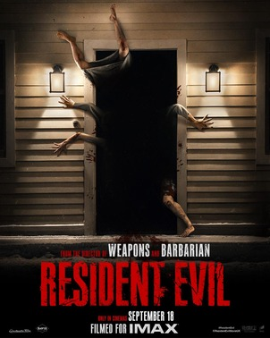
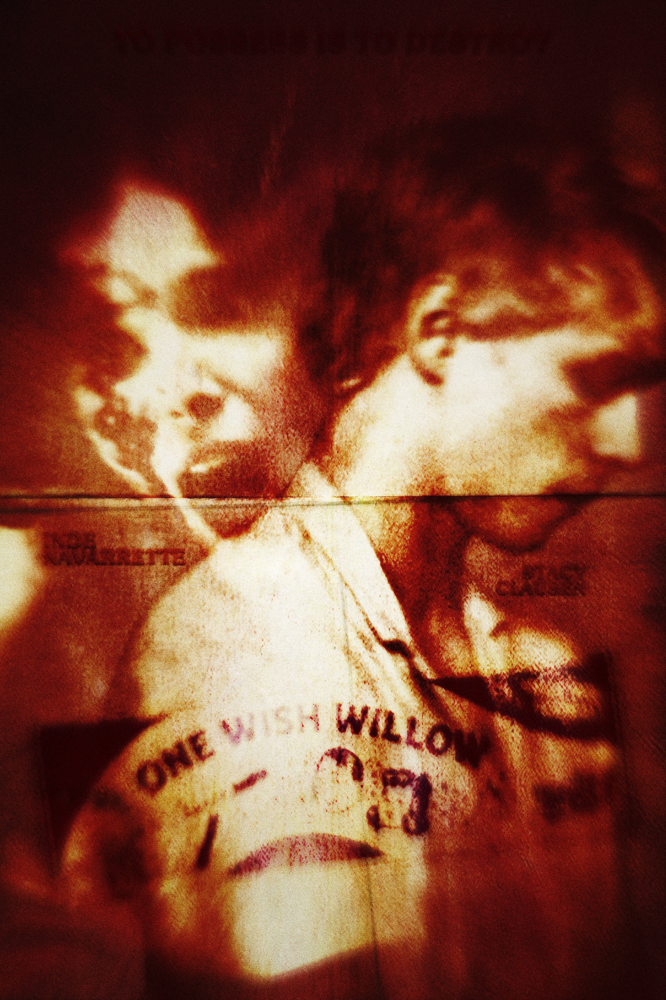
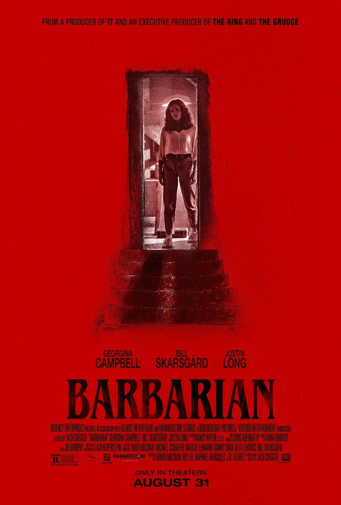

My name is Isaiah Sanchez, as the site says. I like all sorts of stuff; music is a big one. Movies is a close second. The music I like is pretty diverse, I listen to things from western California. Where I grew up. I listen to nu-metal. Some country. I listen to all sorts of shit. I particulary like horror movies, Spider-Man movies, the Ghost Rider movie (the first one with Cage). Not much is very interesting about me... I guess?
I've been writing since 2021. During COVID, I was in California and I watched a video about cancelled Iron Man films by SuperVoid Cinema. Prior to that, I've always wanted to do something creative, whether it was animation or just drawing. I've always loved movies and just thought after watching the video "I should start writing some movies. Movies I want to see." So that's basically what I did. I began writing fanfiction for Marvel and DC characters. Now, it wasn't the fact that some Iron Man films were cancelled. It was actually the script, the David Hayter script. I found it online and began to read some of it and for some reason everything about it pulled me closer. This was at the start of highschool... I think? Yeah. So, like I said, I started writing fanfiction. Most of it sucked. But, it was still me learning the craft, the format, everything about screenwriting. Later on, I wanted to start writing original stuff. So, I tried a few times. Nothing came out of it. I was just writing really short films or just writing fanfiction. That was until more recent in I believe 2023, I wrote my first original feature. Which is terrible. But, since then I've been writing originals whether they're shorts or features. I also dabbled in comic book writing. I wrote one issue a long time ago in I think either middle school or freshman year, it was a Batman sorta comic about a character I created in 2018 called "SHADOW." I put it away and years later, about 2 years ago, I wrote 5 issues of a SHADOW series, but it's completely different than the one prior. This Shadow is a little more grounded and has more depth than before. It's inspired by THE MAXX and in my head takes place in that world.
I use WriterSolo to write my screenplays. It's the free version of WriterDuet. I don't think it gets the updates that WriterDuet does, if it does get updates. But, I love to use it. Nearly if not all of my scripts after Don't Kill My Vibe has been written in that website.

RESIDENT EVIL. (2026) Directed By: Zach Cregger
I love this movie. It's recent but eh, oh well. It's a great movie. You'll see a lot of recent horror films on here as I haven't been into horror for that long and I don't watch old movies and think "the new movies suck." I was also born in the 2000s so I guess it has something to do with it -- anyways -- I love this movie. Austin is so good in it, Zach is an amazing director and writer, he knows exactly how to put comedy in a horror film.

OBSESSION. (2026) Directed By: Curry Barker
I really liked this movie. It was so creepy and overall a great watch. I went in actually without a trailer or first-look or anything. I don't think I even knew who Curry Barker was. Me and my girlfriend watched it and immediately I loved it. The cinematography, writing, and especially the sound design. It was all amazing. People hate on this movie but I think it's a personal issue.
Also, for once this film doesn't romantize obsessing over someone. Bear's obsession with wanting to be with Nikki causes him to break the One Wish Willow. I think some people don't like this for a few reasons; it's popular, and maybe they don't like how it swapped the norm of romantizing obsessive behavior and overall creepiness. In the 80s and 90s a lot of romance films had a generally creepy protagonist going after the woman. This obviously isn't a romance but in my opinion it still applies.
Finally, the score is amazing. I love "Love Is In The Air Part 1 (and 2)" and "BEAR."

BARBARIAN. (2022) Directed By: Zach Cregger
This is the first film I've seen of Zach Cregger (it's also his first horror film). Immediately I was smitten by it. The story was so good and such a weird (in a good way) horror movie. He's got a style that I've seen throughout all 3 of his horror films. He knows how to do a scare. Like in every one of his horror movies he does either 2 different scares: the dread and the heart attack. The dread is when he would allow the camera to focus on something scary coming towards us or just being scary. The camera moves forward. It's not a boring frame at all. The heart attack is when you already SAW something scary and then a quicker scare happens immediately and scares the shit out of you. For example, in Barbarian, Keith comes from the darkness and begs for help and then the Mother just comes out of nowhere quickly and smashes his head. In Resident Evil, Bryan has his shotgun and the camera just showed us that the lady in the red dress is running towards the house. So most people just expect that to be the dread. But then the homeowner comes out of nowhere and attacks him. I read the script prior to the release of the Resident Evil film and I still jumped.
The music and casting choices are amazing. Justin Long is a favorite of mine, and so is Bill Skarsgård. Then with as the credits roll, the song "Be My Baby" by The Ronettes plays and it's the perfect song for the movie. Everything he does is just awesome (yes, I'm dick riding).